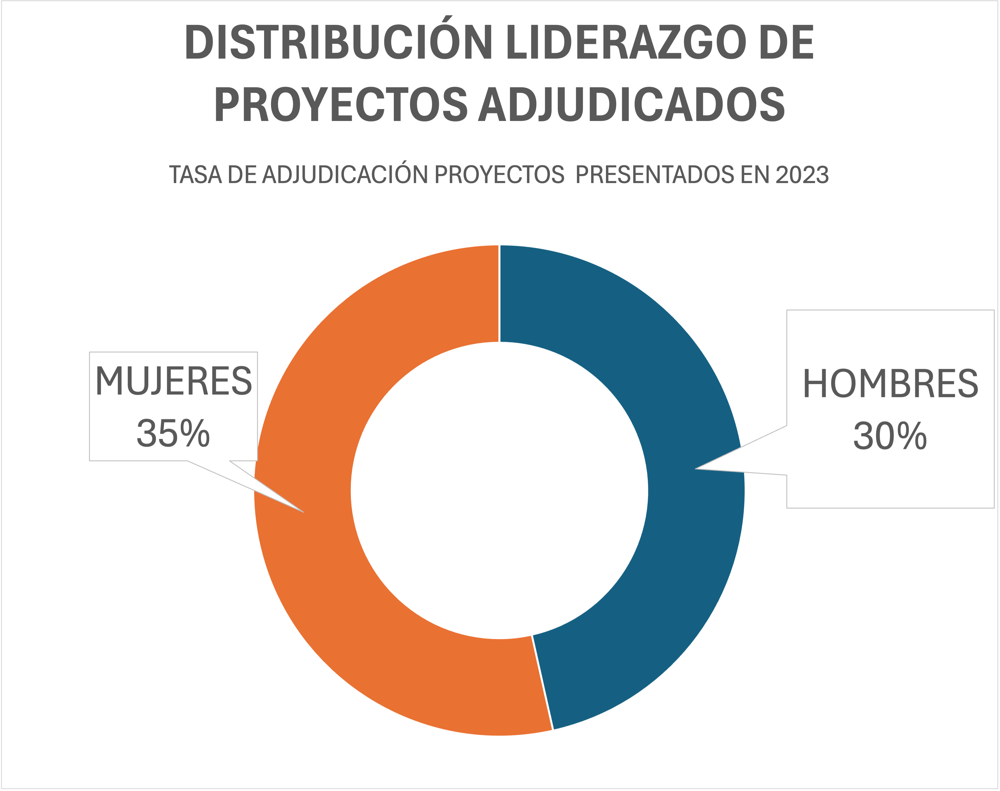
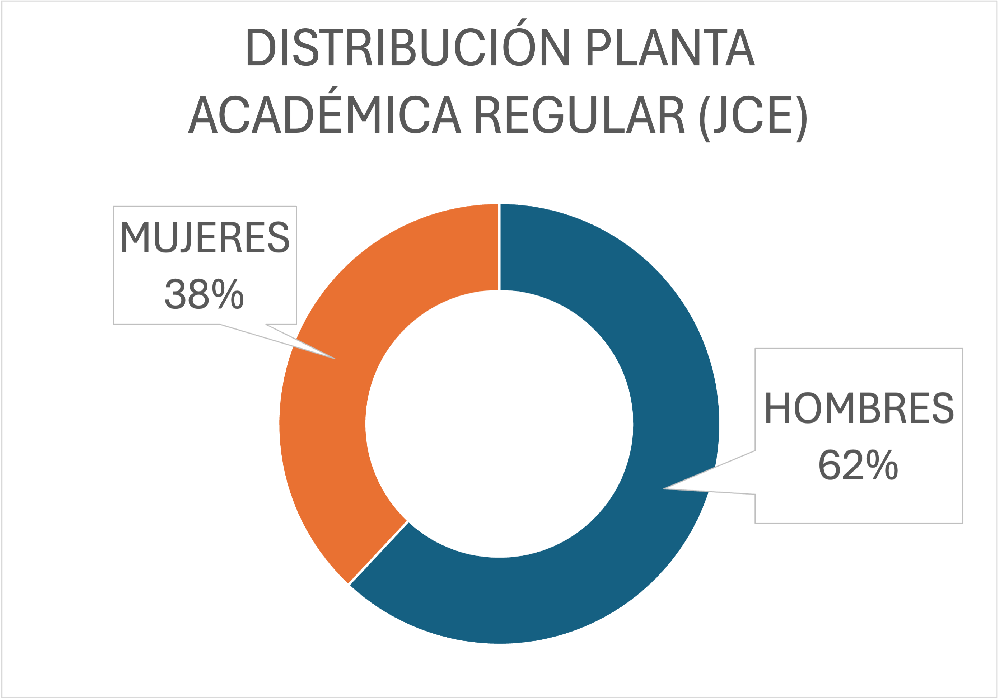

MODELO HUELLA DE GÉNERO
El modelo es una herramienta estratégica diseñada para diagnosticar, monitorear y promover la igualdad de género en las instituciones.
Utiliza indicadores estandarizados en siete dimensiones clave para proporcionar información confiable que permita definir planes de acción, evaluar progresos y ajustar estrategias.
Su implementación fortalece una cultura académica y de investigación más inclusiva y equitativa.
Objetivos
Dimensión 1: Avanzar en la integración de igualdad de género en investigación.
Dimensión 2: Garantizar igualdad en contratación y promoción de académicas(os) e investigadoras(es).
Dimensión 3: Avanzar en liderazgo y desarrollo profesional de investigadoras.
Dimensión 4: Mantener políticas de remuneraciones transparentes y condiciones laborales equitativas.
Dimensión 5: Garantizar corresponsabilidad social y parental institucional.
Dimensión 6: Mantener protocolos para prevenir y sancionar el acoso sexual laboral.
Dimensión 7: Garantizar estrategias comunicacionales con lenguaje inclusivo.
NIVEL DE AVANCE INSTITUCIONAL EN IGUALDAD DE GÉNERO
PERIODO 2023
Dimensión 1: Institucionalización del principio de Igualdad de Género en la Gestión de la Investigación que realiza la Universidad
Dimensión 2: Gestión de personas (investigadores/as) con igualdad de género
Dimensión 3: Promoción de liderazgo de las investigadoras.
Dimensión 4: Estrategias para el cierre de la brecha salarial de género
Dimensión 5: Conciliación vida laboral, familiar y personal con corresponsabilidad social
Dimensión 6: Promoción de ambientes laborales libres de acoso sexual
Dimensión 7: Comunicaciones estratégicas con enfoque de género
| Nivel de Madurez | |
|---|---|
| 0 – Cero | ❋❋❋❋ |
| 1 – Principiante | ❋❋❋❋ |
| 2 – Aprendiz | ❋❋❋❋ |
| 3 – Maduro | ❋❋❋❋ |
| 4 – Referente | ❋❋❋❋ |
COMPROMISOS INSTITUCIONALES
- 💡
- Política Institucional de Equidad de Género y Diversidad Sexual
- Diagnóstico Institucional Integrado sobre Brechas de Género en I+D+i+e
- Guía para la incorporación del enfoque de género a líneas de financiamiento en I+D+i+e
- Manual de Buenas Prácticas en I+D+i+e
- Recomendaciones para la incorporación de la perspectiva de género a proyectos de investigación
- 📈
- 💬
HITOS DEL PERÍODO
-
💼
- En 2023, el 35% de los proyectos liderados por mujeres fue adjudicado.
-


- 💡
OPORTUNIDADES DE MEJORA
-

Reducir la brecha de entrada en la planta académica regular